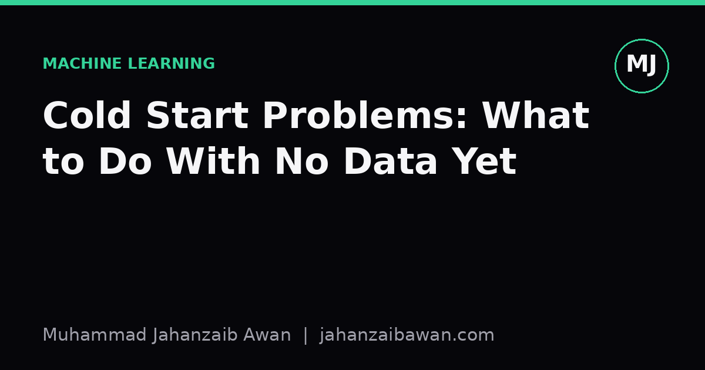

Cold Start Problems: What to Do With No Data Yet
Every system needs data to learn, but every system also starts at zero. Here is how to think about the gap between launch and having enough signal to trust a model.

The problem nobody wants to admit
Most machine learning tutorials start with a dataset already sitting on disk. Thousands of rows, clean labels, a train and test split ready to go. Real projects rarely start there. A new product launches with zero purchase history. A new user signs up with no click trail. A new fraud detection system goes live with no confirmed fraud cases because the fraud has not happened yet under this system. This is the cold start problem, and it is less about algorithms and more about honest reasoning under near-total uncertainty.
The instinct many teams have is to reach for a model anyway, because that is what the roadmap says. This is where things go wrong. A model trained on ten interactions, or worse, trained on proxy data that does not resemble the real distribution, will produce confident-looking outputs that are essentially noise. The danger is not that the model fails obviously; it is that it fails quietly, producing plausible numbers that nobody questions because there is a model behind them.
I think the healthiest mental shift is to stop treating cold start as a data problem to be solved by finding more data, and start treating it as a sequencing problem. The question is not can we build a model, it is what is the cheapest reliable thing we can do before a model earns its place. That reframing changes almost every subsequent decision.
Rules, heuristics, and borrowed data before models
Consider a new e-commerce site trying to recommend products to first-time visitors. There is no purchase history and no click data. The tempting move is to build a collaborative filtering model anyway, seeded with whatever tiny trickle of data exists. A better move is to start with a rule: show the most popular items overall, or the most popular items within the visitor's referral category if that is known. This is not machine learning, and that is fine. Popularity-based ranking is a legitimate baseline, and in a cold start it may well be the best available option, not a placeholder to feel embarrassed about.
A second useful lever is borrowed data from an adjacent, related problem. If you are launching fraud detection for a new payment product, you may not have fraud labels for this specific product, but you likely have fraud labels from a similar product line, or industry-published rules about common fraud patterns such as mismatched billing and shipping addresses at unusual velocity. Transfer of this kind is imperfect: the base rates will differ, and the feature distributions will not match exactly. But an imperfect prior beaten into a rule-based filter is still more honest than a model trained on five confirmed cases, because with five cases you cannot even estimate variance sensibly.
A third lever, often underused, is deliberately generating data through structured exploration rather than waiting passively. In recommendation contexts this is sometimes called an explore phase: show a diverse, non-personalised slate to new users specifically so that their reactions produce usable signal quickly. The cost is a slightly worse experience for the first cohort of users, but the payoff is a dataset that actually reflects real behaviour rather than being contaminated by whatever heuristic you happened to launch with. Worth noting: if you never explore, and only ever recommend what the current rule already favours, you create a feedback loop where the rule looks validated forever because it never gets tested against alternatives. That is a leakage-like trap, just in the data generation process rather than the split.
A worked example: fraud scoring at launch
Say a fintech company launches a new lending product. In month one there are 400 loan applications and, naturally, zero confirmed defaults yet because loans have not matured. A team under pressure might train a model on the 400 applications using some proxy label, perhaps flagging anyone who missed a single early payment as high risk. This proxy is noisy: some people miss a payment by accident and repay in full, some people who never miss an early payment default months later. Training a model on 400 examples with a shaky proxy label will produce a scorer with an illusion of precision, perhaps reporting an AUC of 0.81 on a validation set of 80 people, a number that sounds respectable but rests on a foundation too thin to generalise.
A more defensible sequence: launch with an underwriting rule set built from established credit risk factors that are well understood industry-wide, such as debt-to-income ratio thresholds and credit bureau scores. Log every feature you can for every application regardless of outcome. Wait until enough loans have matured to their first scheduled repayment milestone, say six months, so that the label reflects an outcome you actually care about rather than a proxy. At that point, with perhaps 3,000 matured loans and a genuine default rate, you have something worth modelling, and you can properly hold out a leakage-aware temporal split where the test set consists of loans that matured after the training set's applications were made.
The six-month wait feels slow, and stakeholders will ask why you are not using machine learning from day one. The honest answer is that a model trained on noise is worse than no model, because it hides the noise behind a score that looks authoritative. The rule-based system, while cruder, is transparent: everyone knows it is a rule, everyone knows its limitations, and nobody mistakes it for something it is not.
The practical takeaway
Cold start is not a gap to be papered over with a model built too early; it is a phase to be managed deliberately. Use transparent rules or borrowed priors while data accumulates, log everything even when you cannot yet use it, consider structured exploration to generate signal rather than waiting passively, and be explicit with stakeholders about which stage you are in and why the current approach is a heuristic rather than a learned model. The moment you do have enough matured, correctly labelled data, revisit the problem properly with a leakage-aware split and a real baseline comparison against the heuristic you were using.
The single most useful discipline is refusing to let a model's existence substitute for its validity. A model is not automatically better than a rule; it is better only when there is enough representative data to estimate its parameters and evaluate it honestly. Until that point, the most sophisticated thing you can do is admit you are still collecting data, and build your system to reflect that truth rather than disguise it.